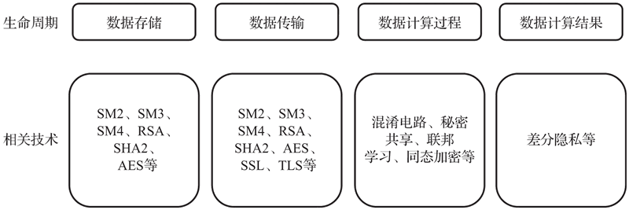
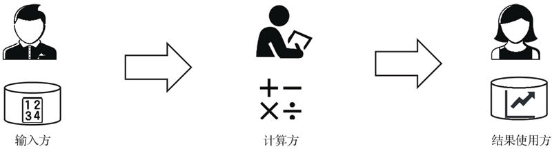
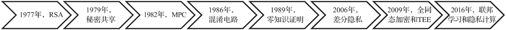
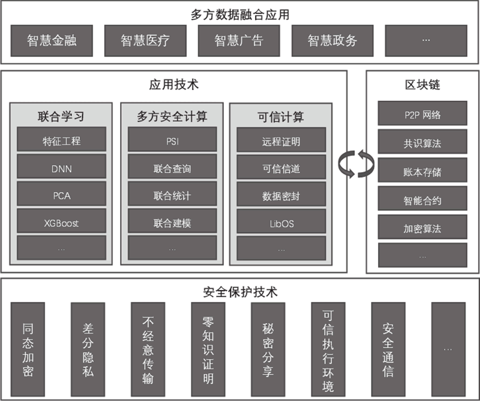
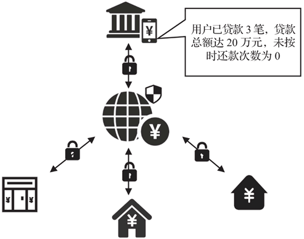
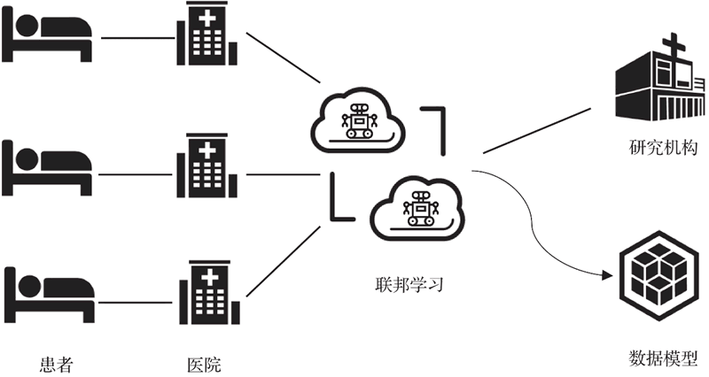

首页 > 编程笔记
隐私计算技术是什么（超级详细）
“假设有两个百万富翁，他们都想知道谁更富有，但他们都想保护好自己的隐私，都不愿意让对方或者任何第三方知道自己真正拥有多少财富。那么，如何在保护好双方隐私的情况下，计算出谁更有钱呢？”
这是 2000 年图灵奖得主姚期智院士在 1982 年提出的“百万富翁”问题。这个烧脑的问题涉及这样一个矛盾，如果想比较两人谁更富有，两人似乎就必须公布自己的真实财产数据。但是，两个人又都希望保护自己的隐私，不愿让对方或者任何第三方知道自己的财富。在普通人看来，这几乎是一个无解的悖论。
然而在专业学者眼里，这是一个加密学问题，可以表述为“一组互不信任的参与方在需要保护隐私信息以及没有可信第三方的前提下进行协同计算的问题”。这也被称为“多方安全计算”（Secure Multiparty Computation，SMC）问题。
姚期智院士在提出“多方安全计算”概念的同时，也提出了自己的解决方案——混淆电路（Garbled Circuit）。随着多方安全计算问题的提出，投入到多方安全计算研究的学者越来越多。除了混淆电路之外，秘密共享、同态加密等技术也开始被用来解决多方安全计算问题，隐私计算技术也逐步发展了起来。
个人隐私保护成为人们广泛关注的焦点，人们也都认识到隐私信息是大数据的重要组成部分，而隐私保护关乎个人、企业乃至国家的利益。
针对隐私保护问题，学术界开展了大量的研究工作，包括多方安全计算技术在内的隐私保护技术在逐步完善发展中得以应用。然而，隐私缺乏定量化的定义，隐私保护的效果、隐私泄露的利益损失以及隐私保护方案融合的复杂性三者缺乏系统的计算模型，这就使得隐私信息在不同系统和不同用户间的共享、交换和分析过程中难以被准确刻画和量化，阻碍了各类计算和信息服务系统对隐私进行有效、统一的评价。
针对这一问题，2016 年，中国科学院信息工程研究所研究员李凤华等对隐私计算在概念上进行了界定：隐私计算是面向隐私信息全生命周期保护的计算理论和方法，具体是指在处理视频、音频、图像、图形、文字、数值、泛在网络行为信息流等信息时，对所涉及的隐私信息进行描述、度量、评价和融合等操作，形成一套符号化、公式化且具有量化评价标准的隐私计算理论、算法及应用技术，支持多系统融合的隐私信息保护。
隐私计算涵盖信息所有者、搜集者、发布者和使用者在信息采集、存储、处理、发布（含交换）、销毁等全生命周期中的所有计算操作，是隐私信息的所有权、管理权和使用权分离时隐私描述、度量、保护、效果评估、延伸控制、隐私泄露收益损失比、隐私分析复杂性等方面的可计算模型与公理化系统。
同时，中国信通院根据数据的生命周期，将隐私计算技术分为数据存储、数据传输、数据计算过程、数据计算结果 4 个方面，每个方面都涉及不同的技术，如下图所示。数据存储和数据传输技术相对成熟，读者也可能应用过相关技术。
根据数据生命周期，我们可以将隐私计算的参与方分为输入方、计算方和结果使用方三个角色，如图 2 所示。
在一般的隐私计算应用中，至少有两个参与方，部分参与方可以同时扮演两个或两个以上的角色。计算方进行隐私计算时需要注意“输入隐私”和“输出隐私”：
联合国全球大数据工作组将隐私保护计算技术定义为在处理和分析数据的过程中能保持数据的加密状态、确保数据不会被泄露、无法被计算方以及其他非授权方获取的技术。与之基本同义的一个概念是“隐私增强计算技术”，通常可换用。
从技术层面来说，目前隐私计算主要有两类主流解决方案：一类是采用密码学和分布式系统；另一类是采用基于硬件的可信执行环境（Trusted Execution Environment，TEE）。
目前，密码学方案以 MPC 为代表，通过秘密共享、不经意传输、混淆电路、同态加密等专业技术来实现。近几年，其性能逐渐得到提升，在特定场景下已具有实际应用价值。
基于硬件的可信执行环境方案是构建一个硬件安全区域，隐私数据仅在该安全区域内解密出来进行计算（安全区域之外，数据都以加密的形式存在）。其核心是将数据信任机制交给像英特尔、AMD 等硬件方，且因其通用性较高且计算性能较好，受到了较多云服务商的推崇。这种通过基于硬件的可信执行环境对使用中的数据进行保护的计算也被称为机密计算（Confidential Computing）。另外，在人工智能大数据应用的大背景下，近年来比较火热的联邦学习也是隐私计算领域主要推广和应用的方法。
下图展示了各项隐私计算技术的发展时间线。可以看出，隐私计算技术还是比较“年轻”的技术。
《腾讯隐私计算白皮书2021》将当前隐私计算的体系架构总结为下图。
一般而言，越是上层，其面临的情况可能越复杂，往往会综合运用下层中的多项技术进行安全防护。虽然根据多方安全计算的定义，联邦学习（也就是图 4 中的“联合学习”）也应该属于广义的“多方安全计算”范畴，但可能是由于当前机器学习比较火热，业界普遍将联邦学习单独列出。
我国也相继出台了《中华人民共和国网络安全法》《信息安全技术个人信息安全规范》及其相关行业应用的国家技术标准，明确了企业在收集、保存和使用非公开隐私数据时所需要达到的技术效果及建议使用的标准化技术手段。2019年发布的《数据安全管理办法》更是从数据角度出发，确立数据分级分类管理以及风险评估、检测预警和应急处置等数据安全管理各项基本制度，为市场上从事数据活动的机构提供了一个相对公平、公开的竞争环境。2020年1月生效的《中华人民共和国密码法》从法律层面申明了密码技术的重要性。
政策法规的陆续生效规范了基于隐私数据的商业探索，正积极推动隐私保护从宣传口号向真正可以落实的技术进行转变，不仅为隐私数据属主的合法权益提供了保障，而且为挖掘高价值的数据信息提供了前所未有的商业机遇。
在过去，由于法律法规的不明确以及技术能力的不足，大量数据形成数据孤岛，无法产生应有的数据价值。在法律法规方面，原始数据一旦从企业流通出去，企业就失去了对数据的控制权，很难获知数据的实际使用情况，隐私数据存在被滥用的可能。在商业利益方面，数据作为企业资产之一，流通不可控会削弱企业的核心竞争力，可能还会打破自身的商业壁垒，甚至可能因为数据被滥用而面临法律问题以及巨额罚单。因此，虽然很多企业积累了大量数据，但数据的商业应用面临种种限制，商业价值还远未被挖掘。
发展隐私计算技术正是消除这些限制的关键，众多投资机构也敏锐地发现了隐私计算技术的商机。表1-1列出了部分以隐私保护为产品设计卖点的初创公司的融资数据，反映了全球资本市场对隐私保护产业市场前景的认可。
近年来，众多国内外科技巨头也一直在布局隐私计算产业，微软、谷歌、蚂蚁金服、腾讯、百度等都已推出各自的基于隐私计算的相关产品。而且，头部互联网公司凭借数据优势和规模效益加快研发，金融、通信、区块链公司也在陆续规划入场，巨大的市场正在形成。
报告举例说明了同态加密、零知识证明等隐私计算技术如何在金融服务中实现隐私保护，并认为隐私计算技术可以改变数据共享现状，让金融机构以客户、监管机构和整个社会都能接受的方式解决目前最紧迫的问题，并创造价值。
与 Gartner 前一年发布的 2020 年十大重要战略趋势比较可以发现，Gartner 在持续关注数据和隐私，并把隐私增强计算作为一项新的战略趋势单独提出，足见隐私计算在当今科技发展中的前沿性和重要性。
Gartner 公司认为，到 2025 年，一半以上大型组织将实施隐私增强计算，以在不受信任的环境和多方数据分析用例中处理数据。而 Gartner 所称的隐私增强计算也就是我们所说的隐私计算。
以征信系统为例，银行、小贷公司等金融机构需要通过多个信息渠道对潜在用户的历史记录进行多维度计算分析。但由于这些数据具有很高的隐私性，且很多信息渠道并不具备足够安全可靠的信息传输管控技术，征信系统的数据丰富性不足或者维度缺失。
如下图所示，通过隐私计算中的多方安全计算技术，各金融机构、信息渠道可形成征信系统联盟，各方数据无须离开本地就能提供数据分析服务。
隐私计算技术能够保护数据隐私，有望打破医疗数据孤岛现象，在医疗行业大有可为。比如利用隐私计算中的联邦学习技术，各医疗机构可实现在原始数据不离院的情况下进行联合建模，如下图所示。事实上，在医疗健康领域，隐私计算技术已经逐步落地。
举例来说，隐私计算技术可以提供政府数据与电信企业、互联网企业等社会数据融合的解决方案，比如可以联合多部门的数据对道路交通状况进行预判，实现车辆路线导航的最优规划，减缓交通堵塞。目前，在一些地方政府的相关规划里，隐私计算技术有望成为下一个应用推广的重点。
未来，隐私计算技术将广泛应用于金融、保险、医疗、物流、汽车等众多拥有隐私数据的领域，在解决数据隐私保护问题的时候，也帮助解决行业内数据孤岛问题，为大量 AI 模型的训练和技术落地提供一种合规的解决方案。
这是 2000 年图灵奖得主姚期智院士在 1982 年提出的“百万富翁”问题。这个烧脑的问题涉及这样一个矛盾，如果想比较两人谁更富有，两人似乎就必须公布自己的真实财产数据。但是，两个人又都希望保护自己的隐私，不愿让对方或者任何第三方知道自己的财富。在普通人看来，这几乎是一个无解的悖论。
然而在专业学者眼里，这是一个加密学问题，可以表述为“一组互不信任的参与方在需要保护隐私信息以及没有可信第三方的前提下进行协同计算的问题”。这也被称为“多方安全计算”（Secure Multiparty Computation，SMC）问题。
姚期智院士在提出“多方安全计算”概念的同时，也提出了自己的解决方案——混淆电路（Garbled Circuit）。随着多方安全计算问题的提出，投入到多方安全计算研究的学者越来越多。除了混淆电路之外，秘密共享、同态加密等技术也开始被用来解决多方安全计算问题，隐私计算技术也逐步发展了起来。
隐私计算的概念
多方安全计算在 20 世纪 80 年代初提出的时候，还只是作为一种亟待可行性验证的技术理论，而后计算机算力不断提高，移动互联网、云计算和大数据等技术快速发展，催生了众多新的服务模式和应用。这些服务和应用一方面为用户提供精准、个性化的服务，给人们的生活带来了极大便利；另一方面又采集了大量用户的信息，而所采集的信息中往往含有大量包括病史、收入、身份、兴趣及位置等在内的敏感信息，对这些信息的收集、共享、发布、分析与利用等操作会直接或间接地泄露用户隐私，给用户带来极大的威胁和困扰。个人隐私保护成为人们广泛关注的焦点，人们也都认识到隐私信息是大数据的重要组成部分，而隐私保护关乎个人、企业乃至国家的利益。
针对隐私保护问题，学术界开展了大量的研究工作，包括多方安全计算技术在内的隐私保护技术在逐步完善发展中得以应用。然而，隐私缺乏定量化的定义，隐私保护的效果、隐私泄露的利益损失以及隐私保护方案融合的复杂性三者缺乏系统的计算模型，这就使得隐私信息在不同系统和不同用户间的共享、交换和分析过程中难以被准确刻画和量化，阻碍了各类计算和信息服务系统对隐私进行有效、统一的评价。
针对这一问题，2016 年，中国科学院信息工程研究所研究员李凤华等对隐私计算在概念上进行了界定：隐私计算是面向隐私信息全生命周期保护的计算理论和方法，具体是指在处理视频、音频、图像、图形、文字、数值、泛在网络行为信息流等信息时，对所涉及的隐私信息进行描述、度量、评价和融合等操作，形成一套符号化、公式化且具有量化评价标准的隐私计算理论、算法及应用技术，支持多系统融合的隐私信息保护。
隐私计算涵盖信息所有者、搜集者、发布者和使用者在信息采集、存储、处理、发布（含交换）、销毁等全生命周期中的所有计算操作，是隐私信息的所有权、管理权和使用权分离时隐私描述、度量、保护、效果评估、延伸控制、隐私泄露收益损失比、隐私分析复杂性等方面的可计算模型与公理化系统。
同时，中国信通院根据数据的生命周期，将隐私计算技术分为数据存储、数据传输、数据计算过程、数据计算结果 4 个方面，每个方面都涉及不同的技术，如下图所示。数据存储和数据传输技术相对成熟，读者也可能应用过相关技术。

图 1 根据生命周期划分的隐私计算技术
图 1 根据生命周期划分的隐私计算技术
根据数据生命周期，我们可以将隐私计算的参与方分为输入方、计算方和结果使用方三个角色，如图 2 所示。

图 2 隐私计算参与方的三种角色
图 2 隐私计算参与方的三种角色
在一般的隐私计算应用中，至少有两个参与方，部分参与方可以同时扮演两个或两个以上的角色。计算方进行隐私计算时需要注意“输入隐私”和“输出隐私”：
- 输入隐私是指参与方不能在非授权状态下获取或者解析出原始输入数据以及中间计算结果；
- 输出隐私是指参与方不能从输出结果反推出敏感信息。
联合国全球大数据工作组将隐私保护计算技术定义为在处理和分析数据的过程中能保持数据的加密状态、确保数据不会被泄露、无法被计算方以及其他非授权方获取的技术。与之基本同义的一个概念是“隐私增强计算技术”，通常可换用。
隐私计算技术的发展脉络
现在，除了 MPC 技术外，隐私计算领域还呈现出更多新的技术特点和解决方案。从技术层面来说，目前隐私计算主要有两类主流解决方案：一类是采用密码学和分布式系统；另一类是采用基于硬件的可信执行环境（Trusted Execution Environment，TEE）。
目前，密码学方案以 MPC 为代表，通过秘密共享、不经意传输、混淆电路、同态加密等专业技术来实现。近几年，其性能逐渐得到提升，在特定场景下已具有实际应用价值。
基于硬件的可信执行环境方案是构建一个硬件安全区域，隐私数据仅在该安全区域内解密出来进行计算（安全区域之外，数据都以加密的形式存在）。其核心是将数据信任机制交给像英特尔、AMD 等硬件方，且因其通用性较高且计算性能较好，受到了较多云服务商的推崇。这种通过基于硬件的可信执行环境对使用中的数据进行保护的计算也被称为机密计算（Confidential Computing）。另外，在人工智能大数据应用的大背景下，近年来比较火热的联邦学习也是隐私计算领域主要推广和应用的方法。
下图展示了各项隐私计算技术的发展时间线。可以看出，隐私计算技术还是比较“年轻”的技术。

图 3 隐私计算技术的发展时间线
图 3 隐私计算技术的发展时间线
《腾讯隐私计算白皮书2021》将当前隐私计算的体系架构总结为下图。

图 4 隐私计算体系架构
图 4 隐私计算体系架构
一般而言，越是上层，其面临的情况可能越复杂，往往会综合运用下层中的多项技术进行安全防护。虽然根据多方安全计算的定义，联邦学习（也就是图 4 中的“联合学习”）也应该属于广义的“多方安全计算”范畴，但可能是由于当前机器学习比较火热，业界普遍将联邦学习单独列出。
隐私计算技术是重大科技趋势
近年来，随着互联网技术的蓬勃发展，数据量呈指数级增长，大数据时代已悄然到来。我们可从以下几个方面看出隐私计算技术已是重大科技趋势。1、政策扶持
技术产业的发展离不开政策的扶持。2018 年 5 月生效的《通用数据保护法案》（GDPR）被称为欧盟“史上最严”条例。该法案除了引入巨额的罚款措施之外，还明确了数据保护的技术效果。Google、Facebook等都收到了巨额罚单，多家国际集团公司面临隐私监管机构提起的诉讼。各企业纷纷更新隐私政策，对隐私保护的重视程度达到了史无前例的高度。我国也相继出台了《中华人民共和国网络安全法》《信息安全技术个人信息安全规范》及其相关行业应用的国家技术标准，明确了企业在收集、保存和使用非公开隐私数据时所需要达到的技术效果及建议使用的标准化技术手段。2019年发布的《数据安全管理办法》更是从数据角度出发，确立数据分级分类管理以及风险评估、检测预警和应急处置等数据安全管理各项基本制度，为市场上从事数据活动的机构提供了一个相对公平、公开的竞争环境。2020年1月生效的《中华人民共和国密码法》从法律层面申明了密码技术的重要性。
政策法规的陆续生效规范了基于隐私数据的商业探索，正积极推动隐私保护从宣传口号向真正可以落实的技术进行转变，不仅为隐私数据属主的合法权益提供了保障，而且为挖掘高价值的数据信息提供了前所未有的商业机遇。
2、商业市场前景
除了存量业务的合法合规需求之外，隐私保护产业更大的价值在于促进创新数据业务的落地。在过去，由于法律法规的不明确以及技术能力的不足，大量数据形成数据孤岛，无法产生应有的数据价值。在法律法规方面，原始数据一旦从企业流通出去，企业就失去了对数据的控制权，很难获知数据的实际使用情况，隐私数据存在被滥用的可能。在商业利益方面，数据作为企业资产之一，流通不可控会削弱企业的核心竞争力，可能还会打破自身的商业壁垒，甚至可能因为数据被滥用而面临法律问题以及巨额罚单。因此，虽然很多企业积累了大量数据，但数据的商业应用面临种种限制，商业价值还远未被挖掘。
发展隐私计算技术正是消除这些限制的关键，众多投资机构也敏锐地发现了隐私计算技术的商机。表1-1列出了部分以隐私保护为产品设计卖点的初创公司的融资数据，反映了全球资本市场对隐私保护产业市场前景的认可。
| 公司名称 | 公司简介 | 融资描述 |
|---|---|---|
| Datavant | 使用隐私计算技术帮助生命科学和医疗机构安全连接数据的服务商 | 2020 年 10 月 B 轮融资 4000 万美元 |
| Enveil | 技术的核心创新点是大范围实现同态加密，使大规模搜索、分析和计算加密数据成为可能 | 2020 年 2 月 A 轮融资 1000 万美元 |
| Inpher | 基于多方安全计算和同态加密提供隐私保护的数据分析和机器学习产品 | 2018 年 11 月 A 轮融资 1000 万美元 |
| OneTrust | 提供隐私管理程序，帮助公司遵守 GDPR、《加州消费者隐私法》和其他数百项全球隐私法律 | 2020 年 12 月 C 轮融资 3 亿美元 |
| 华控清交 | 自主开发并推出了 一系列基于多方安全计算的隐私计算技术，可以使多个非互信数据库在数据相互保密的前提下进行高效数据融合计算，实现数据“可用不可见、可控可计量" | 成立于 2018 年 6 月，成立不到一年已 完成两轮融资，估值超过 12 亿元。2021 年 10 月 B 轮融资的投后估值超 40亿元 |
| 翼方健数 | 以医疗行业为切入点，专注于隐私安全计算领域的大数据和人工智能 | 2020 年 7 月完成数千万美元 B 轮融资。2021 年 7 月完成超过 3亿元的 B+ 轮融资 |
| 错歲科技 | 旨在打造一流的大数据隐私云计算平台，通过分离数据的所有权、管理权和使用权，充分实现数据安全共享和快捷有效的大数据流转 | 2020 年初完成 A 轮数千万元人民币融资。2021 年 8 月完成亿元级 B 轮融资 |
| 洞见科技 | 以安全多方计算、联邦学习、区块链为核心技术的数据智能科技服务商 | 2020 年 8 月完成天使轮融资约 2000 万元。2021 年 3 月完成数千万元的 Pre-A 轮融资 |
近年来，众多国内外科技巨头也一直在布局隐私计算产业，微软、谷歌、蚂蚁金服、腾讯、百度等都已推出各自的基于隐私计算的相关产品。而且，头部互联网公司凭借数据优势和规模效益加快研发，金融、通信、区块链公司也在陆续规划入场，巨大的市场正在形成。
3、商业研究机构的认同
近年来，商业研究机构在关注数据经济的同时也关注到了隐私计算技术的价值和科技趋势，纷纷提出隐私计算技术是战略趋势，应发展和利用隐私计算技术解决数据孤岛问题，释放数据价值。1) 德勤与世界经济论坛
2019 年 9 月，德勤（Deloitte）在世界经济论坛上发布白皮书“The Next Generation of Data-Sharing in Financial Services: Using Privacy Enhancing Techniques to Unlock New Value”，提出隐私计算是金融服务领域的下一代数据分享方式，应该使用隐私计算技术来解决数据孤岛问题、释放数据价值。报告举例说明了同态加密、零知识证明等隐私计算技术如何在金融服务中实现隐私保护，并认为隐私计算技术可以改变数据共享现状，让金融机构以客户、监管机构和整个社会都能接受的方式解决目前最紧迫的问题，并创造价值。
2) Gartner
2020 年 10 月，Gartner（全球最具权威的IT研究与顾问咨询公司之一）发布了 2021 年需要深挖的 9 项重要战略科技趋势，其中一项包含隐私增强计算（Privacy-Enhancing Computation）。与 Gartner 前一年发布的 2020 年十大重要战略趋势比较可以发现，Gartner 在持续关注数据和隐私，并把隐私增强计算作为一项新的战略趋势单独提出，足见隐私计算在当今科技发展中的前沿性和重要性。
Gartner 公司认为，到 2025 年，一半以上大型组织将实施隐私增强计算，以在不受信任的环境和多方数据分析用例中处理数据。而 Gartner 所称的隐私增强计算也就是我们所说的隐私计算。
3) 毕马威
2021 年 4 月，毕马威与微众银行联合推出了“深潜数据蓝海：2021 隐私计算行业研究报告”，在报告中分析得出隐私计算受到大数据融合应用和隐私保护的双重需求驱动，也是目前国内外政策法规的必然要求，将撬动千亿级规模市场。隐私计算作为近年来兴起的面向隐私信息全生命周期保护的计算方法，将为数据安全共享带来根本性的转变。隐私计算技术的应用场景
隐私计算技术可以为各参与方提供安全的合作模式，在确保数据合规使用的情况下，实现数据共享和数据价值挖掘，有着广泛的应用前景。目前，隐私计算技术的应用场景还在不断扩展。1) 金融行业
在金融行业，数据渠道融合与风险控制是业务实施的重要部分。作为数据隐私安全的重要保障，隐私计算技术在金融领域的应用前景广阔。隐私计算技术可以应用于金融行业的获客和风控，比如多家金融机构在不泄露客户个人信息的前提下对客户进行联合画像和产品推荐；在多头借贷等场景下，在不泄露客户已有贷款数额、各金融机构所拥有的黑名单等信息的前提下有效评估客户的信用情况，降低违约风险。以征信系统为例，银行、小贷公司等金融机构需要通过多个信息渠道对潜在用户的历史记录进行多维度计算分析。但由于这些数据具有很高的隐私性，且很多信息渠道并不具备足够安全可靠的信息传输管控技术，征信系统的数据丰富性不足或者维度缺失。
如下图所示，通过隐私计算中的多方安全计算技术，各金融机构、信息渠道可形成征信系统联盟，各方数据无须离开本地就能提供数据分析服务。

图 5 基于多方安全计算技术的征信系统联盟
图 5 基于多方安全计算技术的征信系统联盟
2) 医疗健康行业
在医疗健康行业，利用人工智能技术针对病情与病例数据建立机器学习模型并训练，可以提高医疗科研与病情推断的效率，提升医疗服务的精准度。但是由于之前缺乏统筹规划和顶层设计，各地医院的信息系统独立且分散；同时，由于医疗数据属于极度隐私的信息，为了避免出现合规风险，各医疗机构普遍对数据持保守态度，病情与病例数据不允许离院共享，各医疗渠道信息的数据融合难度极大，阻碍了医疗系统的智能化发展。隐私计算技术能够保护数据隐私，有望打破医疗数据孤岛现象，在医疗行业大有可为。比如利用隐私计算中的联邦学习技术，各医疗机构可实现在原始数据不离院的情况下进行联合建模，如下图所示。事实上，在医疗健康领域，隐私计算技术已经逐步落地。

图 6 基于联邦学习的医疗场景
图 6 基于联邦学习的医疗场景
3) 政务行业
在政务行业，随着数字经济的发展，智慧城市与政务大数据逐步深入人心，各地政府不断加强推动大数据的规划设计，多地政府设立大数据发展局、大数据管理局等相关管理机构。政务数据涉及医保、社保、公积金、税务、司法、交通等方方面面，隐私安全尤为重要，如能利用隐私计算技术打通政务数据、挖掘数据潜能，那么智慧城市建设必将如虎添翼。举例来说，隐私计算技术可以提供政府数据与电信企业、互联网企业等社会数据融合的解决方案，比如可以联合多部门的数据对道路交通状况进行预判，实现车辆路线导航的最优规划，减缓交通堵塞。目前，在一些地方政府的相关规划里，隐私计算技术有望成为下一个应用推广的重点。
未来，隐私计算技术将广泛应用于金融、保险、医疗、物流、汽车等众多拥有隐私数据的领域，在解决数据隐私保护问题的时候，也帮助解决行业内数据孤岛问题，为大量 AI 模型的训练和技术落地提供一种合规的解决方案。
关注公众号「站长严长生」，在手机上阅读所有教程，随时随地都能学习。内含一款搜索神器，免费下载全网书籍和视频。

微信扫码关注公众号